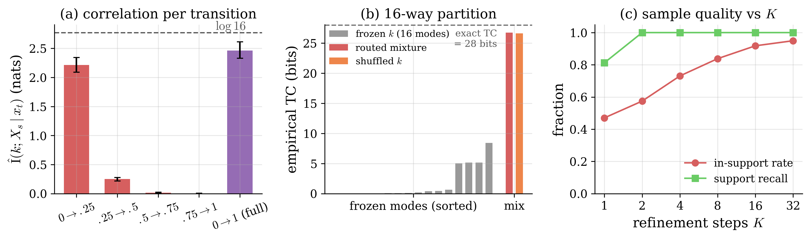
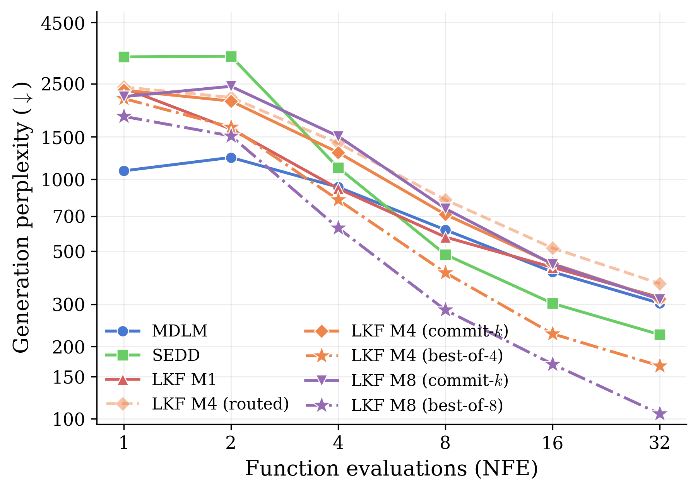

Latent-Kernel Discrete Diffusion for Few-Step Generation
TL;DRMasked diffusion models decide the tokens of a denoising step independently, and with few steps, tokens that must agree often do not. LKF makes each step a mixture of $M$ factorized components tied by one shared latent and trains it from scratch with the exact mixture likelihood. The masked diffusion language model (MDLM) is the case $M=1$. With eight components and best-of-8 decoding, LKF lowers the generative perplexity at 32 steps by 2.1 to 3.3 times relative to MDLM and score entropy discrete diffusion (SEDD) on LM1B and WikiText-103, and by 47% relative to MDLM given the same eight rollouts and selector.
Abstract
Discrete diffusion and flow-matching models denoise a sequence over many steps, but to keep each step cheap, they factorize the transition across positions and decide every token independently. This makes few-step generation challenging for text when the target couples two positions, such as a subject and a verb that must agree. An independent update commits to them separately, and many function evaluations are spent repairing the mismatch. Existing few-step methods buy back the lost correlation by distilling or rectifying a slow teacher, and so inherit the teacher's quality ceiling. We ask instead whether a model can express correlated steps natively, and answer with Latent-Kernel Discrete Diffusion (LKF), a from-scratch masked diffusion kernel that is a mixture of $M$ factorized components tied by a single shared latent. Conditioned on the latent, each component is cheap, and the mixture is summed over the latent in closed form for small $M$. We show that a single step places mass on correlated completions with the same sampling time complexity as a factorized model, since one latent is drawn per sequence and reused across the entire denoising trajectory. We also show that the Masked Diffusion Language Model (MDLM) is a special case of our LKF model at $M=1$. The experiments for unconditional text generation on the One-Billion-Word (LM1B) and WikiText-103 benchmarks show that our LKF model learns strongly heterogeneous components and improves generative perplexity by $2.1\times$ to $3.3\times$ over the likelihood baselines without losing diversity. The gain grows with $M$, and at $M=8$, it surpasses distilled and rectified few-step samplers.
Independent draws within a step
A masked diffusion model generates a sequence of $L$ tokens by unmasking it over several denoising steps. To keep a step cheap, it factorizes the transition from the current state $x_t$ to the next state $x_s$ across positions,
and decides each token independently given $x_t$. With few steps, each step reveals many tokens, and tokens revealed together are often coupled. A subject and its verb must agree in number, and an opening bracket needs its closing match. A factorized step can match the marginal of each token and still place much of its probability on combinations that are jointly inconsistent. What it misses is the total correlation (TC) of the step,
which is zero for any product distribution. In the example of Figure 1, the completions dog barks and dogs bark are equally likely, and each position is uniform over its two words. The target step has $\mathrm{TC}=\log 2$, while the product of its marginals puts half of its mass on dog bark and dogs barks. Later denoising steps then have to repair such mismatches, which costs function evaluations.
Few-step accelerators recover part of this correlation from a trained teacher, either by distillation, as in SDTT and Di4C, or by rectifying its coupling, as in ReDi. They inherit the teacher's quality ceiling. We ask instead whether a model can express correlated steps natively, without a teacher.
Try one step
Factorized step
The loudly.
Agreement in no draws yet
LKF step, $M=2$
The loudly.
Agreement in no draws yet
Both steps use the numbers of Figure 1. The factorized step draws dog or dogs and, independently, barks or bark, each with probability one half. The LKF step draws $k=1$ or $k=2$ with probability one half, and the drawn component fills both positions. The factorized step agrees on about half of its draws, and the LKF step agrees on all of them.
A mixture of factorized steps
LKF keeps each component factorized and ties the components together with one shared latent $k\in\{1,\dots,M\}$. Its step from $x_t$ to $x_s$ is the mixture
A step first draws $k$ from the router weights $w^{\theta}$ and then samples all positions independently from component $k$. Given $k$, the step is as cheap as a factorized one. Summed over $k$, the positions become coupled, and the latent carries the correlation of the step. With $M=1$, the kernel is the factorized step of MDLM.
Training with the exact mixture likelihood
For a target state $x_s$, let $\ell_k=\sum_{i:\,x_t^i=\texttt{[MASK]}}\log P^{\theta}_i(x_s^i\mid x_t,k)$ be the log-probability that component $k$ assigns to all revealed tokens together. The loss sums over the $M$ components in closed form, with no sampled latent and no variational bound,
Because the sum over positions is inside the logsumexp, one latent has to explain the whole masked set jointly. Exchanging the two would train the per-position marginal $\sum_k w_k P^{\theta}_i$ instead, which is blind to correlation and leaves the latent without a training signal. In the language experiments, the target is the clean sequence $x_1$ at $s=1$. A router regularizer keeps the latent in use,
where $\mathbb E_b$ averages over a batch. The first term spreads usage across the $M$ components and prevents the router from sending all inputs to one of them. The second term controls how much information the latent can carry, since $\mathrm I(k;X_s\mid x_t)\le\mathrm H(k\mid x_t)$. We set $\lambda_{\text{lb}}\le 0$, the opposite sign of the usual load-balancing loss, which keeps the prior entropy high and lets the exact likelihood sharpen the posterior over $k$.
Inference with best-of-$M$
Sampling starts from the all-mask sequence and takes $J$ steps. A rollout draws $k$ once at the start, where the router weights are a constant prior, and keeps it for the whole trajectory, which matches the sequence-level training objective. One rollout therefore uses one component. Best-of-$M$ decoding runs all $M$ components as parallel rollouts, scores each finished candidate by the model's own mixture negative evidence lower bound (NELBO), and returns the candidate with the lowest score. It needs no reward model, external judge or teacher, and the rollouts run concurrently at the sequential depth of a single chain.
Exact likelihood
The loss sums over the $M$ components in closed form, with no sampled latent and no variational bound.
Contains MDLM
With one component, the kernel is the factorized step of MDLM.
Teacher-free
LKF trains from scratch and needs no distillation or rectification of another model.
Shared trunk
The latent enters only the last 4 of 12 blocks. A step with $M=8$ then costs 40 block passes instead of 96.
Training and decoding algorithms
Algorithm 1 · LKF training
- Draw a clean batch $x_1$ and one noise level $\tau\sim U[\varepsilon,1]$ per sequence.
- Mask each position of $x_1$ with probability $(1-\varepsilon)\tau$ to get $x_\tau$, and let $\mathcal M$ be the masked positions.
- Run the network once on $(x_\tau,s=1)$ to get the components $P^1,\dots,P^M$ and the router weights $w$.
- For each $k$, compute $\ell_k=\sum_{i\in\mathcal M}\log P_i^k(x_1^i)$, how well component $k$ explains the whole masked set, and combine them as $\log\Psi=\operatorname{logsumexp}_k(\log w_k+\ell_k)$.
- Take a gradient step on $-\log\Psi/\tau$, averaged over the batch, plus the router regularizer $\mathcal R$.
Algorithm 2 · Best-of-$M$ decoding with $J$ steps
- For each component $k=1,\dots,M$, in parallel, start a rollout from the all-mask sequence.
- At step $j=0,\dots,J-1$, run the network and reveal each masked position with probability $1/(J-j)$, drawing its token from $P_i^k$. Revealed tokens stay fixed.
- Fill any position still masked after $J$ steps with the most likely token under $P_i^k$.
- Score each candidate $\hat x^k$ by the mixture NELBO, averaged over $R$ draws of the noise level and mask shared across $k$, and return the candidate with the lowest score.
How much correlation one step can carry
We write $\mathrm{TC}(X_s\mid x_t)$ for the total correlation of the step distribution at a fixed state $x_t$, and $\mathrm I$ for mutual information. Three results bound what a mixture step can express.
Proposition 1 · Latent decomposition and correlation capacity
All correlation of an LKF step passes through the latent. A step with $M$ components carries at most $(L-1)\log M$ nats of total correlation, and none when the router is certain of $k$.
Theorem 1 · Mixture approximation lower bound
Let $P$ be a distribution on sequences of $L$ tokens and $Q=\sum_{k=1}^{M}w_kQ_k$ a mixture of $M$ product distributions, with $Q>0$ wherever $P>0$. Then
Correlation of the target beyond the capacity of the mixture turns into approximation error. Applied to one step, with $P$ the true step and $Q$ the LKF step, the bound limits how close training can bring the two. The bound is tight on the hidden-agreement corpus below.
Theorem 2 · Parity separation
Let $P_d$ be the uniform distribution on the even-parity strings of $\{0,1\}^d$. A mixture $Q$ of at most $M$ product distributions within total variation distance $\mathrm{TV}(P_d,Q)\le\varepsilon<\tfrac13$ of $P_d$ needs
Some targets need exponentially many components. Parity couples all $d$ positions at once, and a mixture with far fewer than $2^{d-1}$ components cannot approximate it well.
Synthetic corpora with known correlation
We test both theorems on two synthetic corpora whose total correlation is known in closed form, and train LKF with $M\in\{1,2,4,8,16\}$ and three seeds. Hidden agreement repeats one of 16 tokens at all 8 positions, and a mixture of 16 components represents it without error. There, the captured information $\hat{\mathrm I}=\mathrm I(k;X_s\mid x_t)$ rises from 0 to 2.46 nats at $M=16$, which is 89% of the $\log 16$ ceiling, and the held-out negative log-likelihood (NLL) falls from 3.50 to 2.56 nats. On parity, which is uniform over the even-parity binary strings, the latent stays unused for all $M$. Its captured information and total correlation remain at zero, and the NLL stays flat near 7.1 nats, as Theorem 2 predicts.
| $M$ | $\log M$ | $\hat{\mathrm I}$ (nats) | $\widehat{\mathrm{TC}}$ (nats) | $(L-1)\log M$ | held-out NLL |
|---|---|---|---|---|---|
| 1 | 0.00 | 0.00 | 0.00 | 0.0 | 3.50 |
| 2 | 0.69 | 0.68 | 4.71 | 4.9 | 3.11 |
| 4 | 1.39 | 1.30 | 9.01 | 9.7 | 2.93 |
| 8 | 2.08 | 1.87 | 13.02 | 14.6 | 2.70 |
| 16 | 2.77 | 2.46 | 17.12 | 19.4 | 2.56 |
Hidden agreement, full transition from $t=0$ to $s=1$, means over three seeds. Both information quantities stay below their ceilings, $\log M$ and $(L-1)\log M$, and the NLL falls as $M$ grows.

Few-step text generation
We train LKF from scratch with $M\in\{1,4,8\}$ on LM1B, with the BERT-base-uncased vocabulary, and on WikiText-103, with the GPT-2 vocabulary, at a sequence length of 128 for 200k steps. We report the generative perplexity (gen-PPL) under GPT-2 Large across the number of function evaluations (NFE), together with the sample entropy $H$, since the judge rewards low-entropy text. The baselines are the likelihood models MDLM and SEDD, the few-step accelerators SDTT, Di4C and ReDi, and an autoregressive transformer (AR) on LM1B.
Generative perplexity across NFEs
| LM1B | ELBO-PPL ↓ | gen-PPL ↓ at NFE | $H$ at 32 ↑ | $\mathrm I(k)$ | |||||
|---|---|---|---|---|---|---|---|---|---|
| 1 | 2 | 4 | 8 | 16 | 32 | ||||
| MDLM | 33.96 | 1082 | 1231 | 926 | 614 | 410 | 304 | ≈4.0 | n/a |
| MDLM, best-of-8† | n/a | 1992 | 1401 | 770 | 428 | 281 | 199 | 5.13 | n/a |
| SEDD | 42.37 | 3235 | 3253 | 1117 | 485 | 303 | 225 | 4.41 | n/a |
| SDTT teacher, 7 rounds | n/a | 1645 | 1122 | 612 | 359 | 243 | 194 | 4.08 | n/a |
| Di4C, best round (4) | n/a | 1375 | 899 | 453 | 236 | 156 | 115 | 3.99 | n/a |
| ReDi, best rectification (3) | n/a | 141 | 133 | 121 | 124 | 119 | 117 | 3.22 | n/a |
| AR (reference) | 27.61 | 135 at a fixed 128 NFE | 4.34 | n/a | |||||
| LKF $M=1$, best-of-8† | n/a | 2024 | 1308 | 706 | 400 | 262 | 183 | 5.12 | 0.00 |
| LKF $M=1$ | 34.22 | 2398 | 1619 | 913 | 573 | 429 | 321 | 5.22 | 0.00 |
| LKF $M=4$† | 35.52 | 2169 | 1649 | 820 | 407 | 226 | 166 | 5.09 | 0.86 |
| LKF $M=8$† | 34.62 | 1827 | 1515 | 625 | 284 | 169 | 105 | 4.93 | 1.48 |
† Best-of-$M$ decoding, which scores $M$ parallel rollouts by the model's own NELBO and spends $M(J+T)$ network calls for $J$ steps and $T$ scoring passes, against $J$ for one chain. The best-of-8 rows of MDLM and LKF $M=1$ use eight noise draws of one model at the same number of calls as LKF $M=8$. ELBO-PPL is the exponential of the per-token NELBO, $H$ is the sample entropy at 32 NFEs, and $\mathrm I(k)$ is the captured information in nats. Bold and underline mark the best and second-best perplexity in each column, without the AR reference.
On LM1B, the gain grows with $M$, and with eight components LKF reaches the lowest gen-PPL at 32 steps, 105, at a higher sample entropy than the accelerators. ReDi leads from one to sixteen steps with a nearly flat curve, but its entropy falls to 3.22, and the GPT-2 judge rewards low-entropy text. On WikiText-103, the mixture rows repeat this pattern, and LKF with $M=8$ reaches 75 at 32 steps, 3.0 times below MDLM and 3.3 times below SEDD. The autoregressive model has the best likelihood, but it needs 128 sequential steps, one per token, to reach a gen-PPL of 135.

The gain comes from the mixture
Best-of-$M$ decoding reranks candidates, and reranking alone helps any model. To separate the two effects, we give MDLM and LKF with $M=1$ the same selector, judge and number of network calls, with eight noise draws of one model in place of eight components. Reranking lowers their gen-PPL at 32 steps from 363 to 199 and from 327 to 183, but the mixture reaches 106, a 47% and a 42% improvement. From four steps on, the advantage grows with the number of steps, from 14% to 42% at 32 steps, while at two steps the single-model pools are slightly ahead. Inside the model, replacing the $M$ components by $M$ noise draws of one component costs 16% at $M=4$ and 35% at $M=8$.
| best-of-8 on LM1B | gen-PPL ↓ at $J$ steps | |||||
|---|---|---|---|---|---|---|
| 1 | 2 | 4 | 8 | 16 | 32 | |
| MDLM, 8 noise draws | 1992 | 1401 | 770 | 428 | 281 | 199 |
| LKF $M=1$, 8 noise draws | 2024 | 1308 | 706 | 400 | 262 | 183 |
| LKF $M=8$, 8 components | 1791 | 1535 | 609 | 292 | 157 | 106 |
| mixture advantage | +10% | −17% | +14% | +27% | +40% | +42% |
A paired run in which each pool of eight candidates is ranked by its own model's NELBO with $T=4$ scoring passes, at $8(J+T)$ network calls for all rows. The last row is the improvement of the mixture over the better single-model pool. Absolute values differ by a few percent from the main table, which comes from a separate run.
Cheaper decoding
Scoring the candidates does not need extra passes. Each step already evaluates all $M$ components, and accumulating the log-probability that component $k$ assigns to the tokens it reveals gives each rollout a running evidence at no extra cost. Selecting by running evidence matches or beats the NELBO selector at each step count, with 125 against 131 at $M=8$ and 32 steps when the rollouts share their noise. Because it ranks rollouts before they finish, it also allows successive halving, which prunes the weakest rollouts partway through and reaches 145 with 96 network calls, three times fewer than full best-of-8, for an 11% higher perplexity.
All decoding strategies at $M=8$ and 32 steps
| candidate pool | selector | network calls | gen-PPL ↓ | $H$ |
|---|---|---|---|---|
| 8 components, independent noise | mixture NELBO | 288 | 106 | 4.96 |
| 8 components, shared noise | mixture NELBO | 288 | 131 | 4.98 |
| 8 components, shared noise | running evidence | 256 | 125 | 4.96 |
| 8 components, successive halving | running evidence | 96 | 145 | 5.00 |
| 1 component, 8 noise draws | mixture NELBO | 288 | 163 | 4.96 |
| 8 components, independent noise | random pick | 32 | 327 | 5.29 |
| 1 component | none | 32 | 315 | 5.20 |
LM1B, from the ablation run of the paper. Shared noise reuses one random stream per step across the eight rollouts, so that only the component differs between them.
Example generations
Uncurated samples of LKF with $M=8$ on LM1B, in generation order. Each sample shows the component $k$ that generated it, numbered from 0 to 7, and its mixture NELBO per token, which the best-of-$M$ selector minimizes. The text uses the uncased BERT vocabulary, which is why it is lowercase with spaces around punctuation. Within a step count, a lower NELBO tends to go with more fluent text.
Samples by number of steps
The first four of 24 uncurated draws. Local phrases are fluent, but the syntax breaks within most clauses.
BibTeX
@inproceedings{ahmed2026lkf,
title = {Latent-Kernel Discrete Diffusion for Few-Step Generation},
author = {Ahmed, Mansoor and Fan, Yue-Tsz and Venkateswara, Hemanth and Patterson, Murray},
booktitle = {NeurIPS 2026 Workshop on Beyond Next-Token Prediction (BeNTo)},
year = {2026}
}